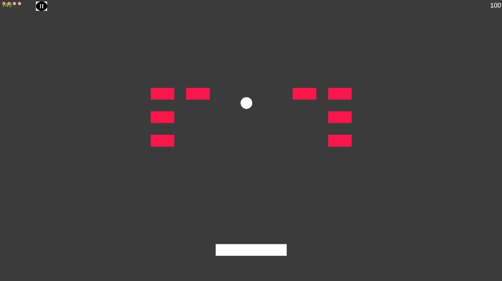

Bricks Breaker is a dynamic and visually appealing 2D arcade game developed in Unity. The goal is to destroy a set of bricks by bouncing a ball off a paddle while utilizing engaging particle effects for enhanced visual feedback. The game provides a fun and interactive experience, combining classic arcade gameplay with modern visual effects.
Key Features
Tools and Technology Used
- Unity 2D: The engine used for implementing game logic, physics, and rendering the game world.
- C#: Scripting language for handling game mechanics, including ball movement, brick destruction, and paddle control.
- Particle System: Creates stunning visual effects such as explosions, glows, and sparkles for feedback when bricks are hit or destroyed.
Gameplay Mechanics
- Paddle and Ball Mechanics: The player controls a paddle that moves horizontally to bounce a ball toward the bricks.
- Brick Destruction: When the ball hits a brick, it is destroyed. Different brick types can have unique behaviors, such as breaking into smaller pieces or requiring multiple hits.
- Particle Effects: Stunning visual effects enhance the player’s experience when hitting bricks or triggering special events.
Conclusion
Bricks Breaker offers a nostalgic yet visually modern arcade experience. With smooth gameplay and engaging particle effects, it brings an exciting twist to the classic brick-breaking genre.